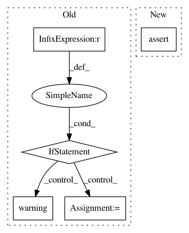

448013222978734615aaebc8e312f946fdce94fe,python/ray/util/client/server/dataservicer.py,DataServicer,Datapath,#DataServicer#Any#Any#,30
Before Change
if self.num_clients == 0 and not ray.is_initialized():
self.ray_connect_handler()
threshold = int(CLIENT_SERVER_MAX_THREADS / 2)
if self.num_clients >= threshold:
context.set_code(grpc.StatusCode.RESOURCE_EXHAUSTED)
logger.warning(
f"[Data Servicer]: Num clients {self.num_clients} "
f"has reached the threshold {threshold}. "
f"Rejecting client: {metadata["client_id"]}. ")
if log_once("client_threshold"):
logger.warning(
"You can configure the client connection "
"threshold by setting the "
"RAY_CLIENT_SERVER_MAX_THREADS env var "
f"(currently set to {CLIENT_SERVER_MAX_THREADS}).")
return
self.num_clients += 1
logger.debug(f"Accepted data connection from {client_id}. "
f"Total clients: {self.num_clients}")
accepted_connection = True
for req in request_iterator:
After Change
f"Total clients: {self.num_clients}")
accepted_connection = True
else:
assert accepted_connection
if req_type == "get":
get_resp = self.basic_service._get_object(
req.get, client_id)
resp = ray_client_pb2.DataResponse(get=get_resp)
In pattern: SUPERPATTERN
Frequency: 4
Non-data size: 5
Instances
Project Name: ray-project/ray
Commit Name: 448013222978734615aaebc8e312f946fdce94fe
Time: 2021-03-31
Author: 74173148+iycheng@users.noreply.github.com
File Name: python/ray/util/client/server/dataservicer.py
Class Name: DataServicer
Method Name: Datapath
Project Name: RaRe-Technologies/gensim
Commit Name: acf1c19943158789cfbd1a15221612c1ce44abe1
Time: 2015-09-18
Author: radimrehurek@seznam.cz
File Name: gensim/models/word2vec.py
Class Name: Word2Vec
Method Name: load_word2vec_format
Project Name: IBM/adversarial-robustness-toolbox
Commit Name: 066b1df23ef8fc68862fdecee62bab88225cb990
Time: 2020-09-23
Author: killian.levacher@ibm.com
File Name: tests/defences/preprocessor/test_inverse_gan.py
Class Name:
Method Name: test_inverse_gan
Project Name: facebookresearch/Horizon
Commit Name: 96f486bd47be8baad365a32fd34d22881fdafa95
Time: 2020-07-30
Author: czxttkl@fb.com
File Name: reagent/training/ranking/seq2slate_sim_trainer.py
Class Name: Seq2SlateSimulationTrainer
Method Name: _simulated_training_input